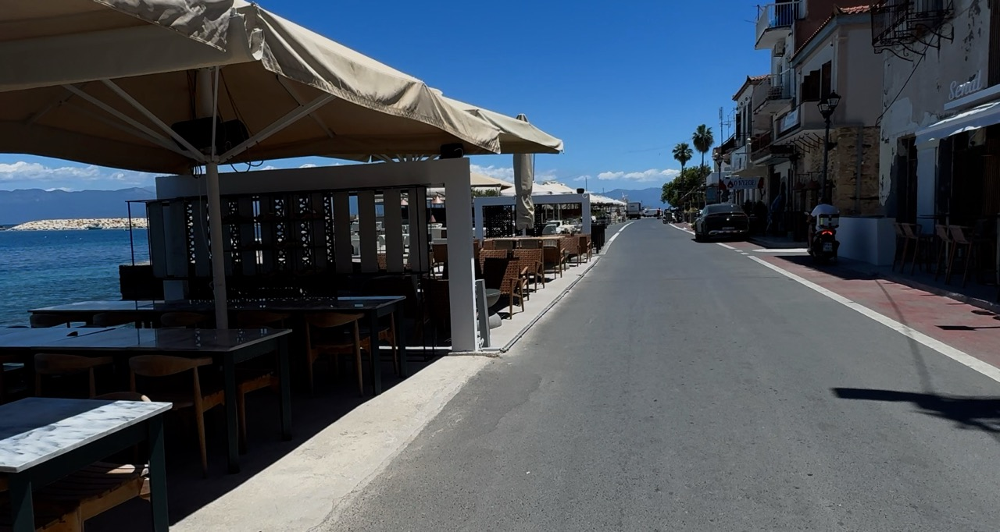
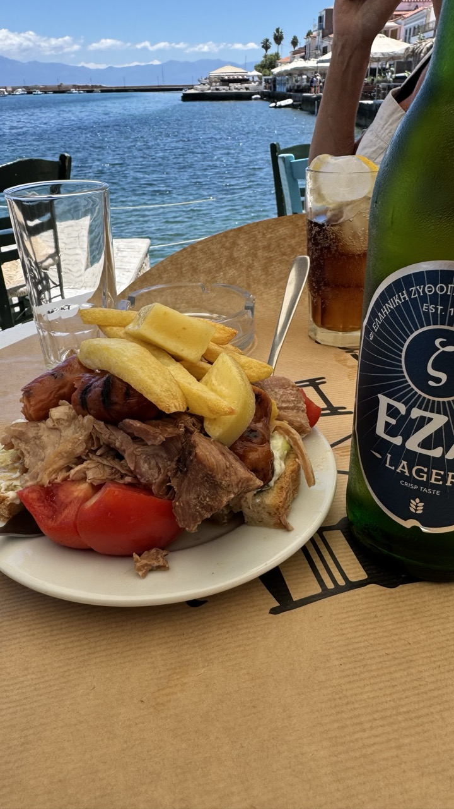
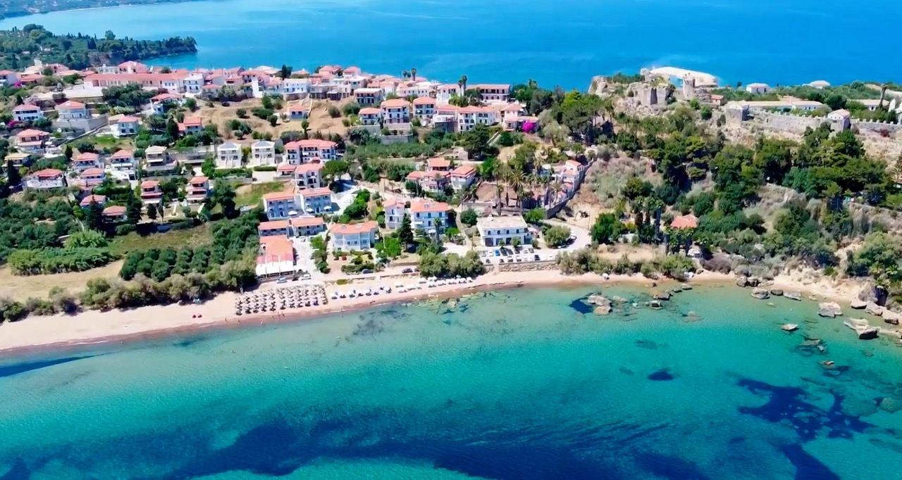

Koroni, on the southern coast of the Messinian Gulf in the Peloponnese, combines a Venetian castle, a pretty harbour, sandy beaches and seriously good Greek food.
Some places are for ticking off sights, others for beaches or a good meal. And then there’s Koroni.
You arrive planning a quick look around and a bite to eat. Three hours later, you’re still beside the harbour, wondering whether it’s too early for another beer. Spoiler alert: in Greece, it rarely is.
Roughly an hour south of Kalamata and 30 minutes from Methoni, Koroni is an excellent stop on a road trip through southwestern Greece.
A HARBOUR MADE FOR LINGERING

Fishing boats bob in the harbour, traditional buildings line the shore, and tavernas and cafés overlook the Messinian Gulf, with the mountains of the Mani peninsula in the distance.
We found a family-run taverna with tables facing the sea. Photographs of the family and restaurant adorned the walls, telling the story of a business that had been part of local life for generations. Very little had changed since 1902.
The place was full of locals enjoying a weekend catch-up. Friends chatted over drinks and conversations flowed between tables. It felt like a genuine meeting place, not somewhere designed just for tourists.
We were slightly peckish but didn't fancy a full meal, so we ordered a beer and a snack. What arrived was a reminder that even a small order in Greece can turn into a feast.
A €7 SNACK AND A LESSON IN GREEK HOSPITALITY

Our snack included meat, potatoes, sausage, tomatoes, bread, olives and cheese. In Britain, we'd probably call it a light lunch and expect to pay considerably more.
The bill? Just €7.
The taverna's name loosely translated as The Meeting Coffee Shop, which seemed entirely appropriate. It was a place to meet, talk and watch the world go by, rather than simply eat and leave.
The family photographs, the history stretching back to 1902 and the locals gathering for their weekend catch-up gave us a glimpse of a side of Greece we love discovering. Sometimes the memories that stay with you aren't famous sights, but a beer, simple food and a sea view.
EXPLORE THE MAGNIFICENT VENETIAN CASTLE
Rising above the harbour is the impressive Castle of Koroni, a sprawling fortress that dominates the peninsula.
The castle's history stretches back to Byzantine times, with the Venetians strengthening the fortifications during the 13th century. Koroni became an important strategic port alongside neighbouring Methoni. The towns were so significant to Venice that they became known as the Eyes of Venice.
Which sounds rather more glamorous than being known for a good harbour and a decent lunch menu.
The fortress later passed between the Venetians and Ottomans, and substantial sections of its walls remain. But this isn't an abandoned monument: homes, gardens, churches and a monastery still sit within its enclosure. People live and worship here, blending everyday life with centuries-old architecture.
It's rather like discovering that your local housing estate comes with a medieval fortress attached.
Look out for the Church of Agia Sophia and the Church of Agios Charalambos, which began as a Catholic church, became a mosque under Ottoman rule and later an Orthodox church. The Monastery of Timios Prodromos occupies part of the western enclosure.
Explore the pathways for views across the Messinian Gulf towards the Mani mountains. The panorama might have you taking twenty-seven photographs to get it right. Not that we're speaking from experience.
RELAX ON ZAGA BEACH

As if a pretty harbour and historic castle weren't enough, Koroni has a lovely beach just below the fortress.
Zaga Beach stretches along the southern side of the peninsula, offering a long sweep of sand and beautiful blue water. It's an ideal place to unwind after exploring the town and its historic streets.
One minute you're imagining Venetian merchants and Ottoman soldiers; the next, you're wondering whether you can spend the rest of the afternoon doing absolutely nothing on the beach.
Nearby Peroulia Beach is another sandy option. Combine the castle, old town and beach for a full day, although lunch might make the beach a late-afternoon activity.
WANDER THE OLD STREETS
Don't limit your visit to the harbour and castle. The streets connecting the two are worth exploring in their own right.
Traditional houses with tiled roofs, narrow lanes and flower-filled balconies make the old town lovely to explore.
Turn down a side street because it looks interesting, stop for a photograph and then realise you've forgotten where you were heading. Not that there was much of a plan in the first place.
Look out for small shops and local life, and don't worry too much about following a map. If you end up back at the harbour, there's always another coffee.
PRACTICAL TIPS FOR VISITING KORONI
Where is Koroni?
A coastal town in Messinia, in the southwestern Peloponnese of Greece, overlooking the Messinian Gulf.
How do you get there?
Allow roughly one hour by car from Kalamata and around 30 minutes from Methoni, depending on your starting point and traffic.
How long should you spend there?
Half a day for the old town and castle; a full day if you want lunch and beach time.
Best things to do:
Explore the castle and churches, wander the old streets, eat at a waterfront taverna, relax on Zaga Beach and enjoy views towards the Mani mountains.
The streets slope and some castle paths are uneven, so wear comfortable shoes. Take water in summer and consider exploring early or later in the day when temperatures are lower. Koroni pairs particularly well with Methoni, Finikounda and Pylos on a road trip around the Messinian coast.
IS KORONI WORTH VISITING? OUR VERDICT
Absolutely.
Koroni combines a working harbour, traditional Greek food, a beautiful beach, winding streets and a magnificent fortress. But its atmosphere and glimpses of everyday life are what make it memorable.
Finding a family-run taverna where locals gathered for their weekend catch-up was every bit as enjoyable as exploring the castle. A beer, a generous €7 snack and a sea view made for a simple pleasure that felt wonderfully Greek.
Koroni doesn't need enormous resorts or a long list of must-see attractions. Sometimes the best places are those where you stop checking your watch and simply enjoy being somewhere different.
And if lunch turns into dinner, your sightseeing schedule has suffered a minor administrative setback. We can think of worse problems to have.
Would we recommend Koroni? Absolutely. Just don't expect us to tell you how long we spent sitting by the harbour. Some things are best left between us, the waiter and the empty plates.
KEEP EXPLORING WITH FLIP FLOP FLICKS
Join us on Flip Flop Flicks as we explore the Peloponnese, sharing travel videos, real experiences and the occasional mishap.
Life's too short to rush around, especially when there's a perfectly good taverna waiting for you. See you on the next adventure!